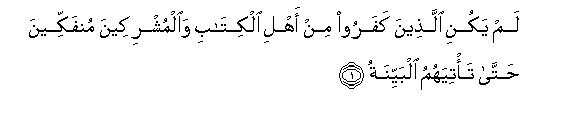
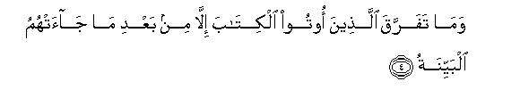
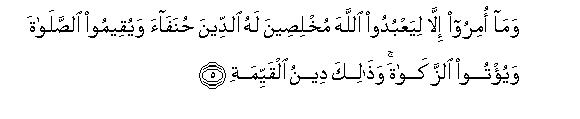
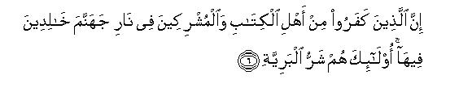
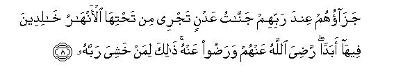

بسم الله الرحمن الرحيم
Sayyid Abul Ala Maududi - Tafhim al-Qur'an - The Meaning of the Qur'an
 98.
Surah Al Bayyina (The Clear Evidence)
98.
Surah Al Bayyina (The Clear Evidence)
The Surah is so designated after the word al-bayyinah occurring at the end of the first verse.
Where it was revealed, at Makkah or Madinah, is also disputed. Some commentators say it is a Makki revelation according to most scholars; others say it is a Madani revelation according to most scholars. Ibn Az Zubair and Ata bin Yasar hold the view that it is Madani. Ibn Abbas and Qatadah are reported to have held two views, first that it is Makki, second that it is Madani. Hadrat Aishah regards it as a Makki Surah. Abu Hayyan, author of Bahr al-Muhit, and Abdul Munim ibn al- Faras, author of Ahkam al-Quran, also have preferred to regard it as Makki. As for its contents, there is nothing in it to indicate whether it was revealed at Makkah or at Madinah.
Its having been placed after Surahs Al-Alaq and Al-Qadr in the arrangement of the Quran is very meaningful. Surah Al-Alaq contains the very first revelation, while Surah Al-Qadr shows as to when it was revealed, and in this Surah it has been explained why it was necessary to send a Messenger along with this Holy Book.
First of all the need of sending a Messenger has been explained, saying: The people of the world, be they from among the followers of the earlier scriptures or from among the idolaters, could not possibly be freed from their state of unbelief, until a Messenger was sent whose appearance by itself should be a clear proof of his apostleship, and he should present the Book of God before the people in its original, pristine form, which should be free from every mixture of falsehood corrupting the earlier Divine Books; and which should comprise sound teachings.
Then, about the errors of the followers of the earlier Books it has been said that the cause of their straying into different creeds was not that Allah had not provided any guidance to them, but they strayed only after a clear statement of the Right Creed had come to them. From this it automatically follows that they themselves were responsible for their error and deviation. Now, if even after the coming of the clear statement through this Messenger, they continued to stray, their responsibility would further increase.
In this very connection, it has been stated that the Prophets who came from Allah and the, Books sent down by Him, did not enjoin anything but that the way of sincere and true service to Allah be adopted, apart from all other ways, no one else's worship, service or obedience be mixed with His, the salat be established and the zakat be paid. This same has been the true religion since ever. From this also it automatically follows that the followers of the earlier scriptures, straying from this true religion, have added extraneous things to it, which are false, and Allah's this Messenger has come to invite them back to, the same original faith.
In conclusion, it has been pointed out clearly that the followers of the earlier Books and the idolaters who would refuse to acknowledge this Messenger are the worst of creatures: their punishment is an everlasting Hell; and the people who would believe and act righteously, and would spend life in the world in awe of God, are the best of creatures: their reward is eternal Paradise wherein they will live for ever. Allah became well pleased with them and they became well pleased with Allah.

In the name of Allah, the Compassionate, the Merciful.

[1-3] The disbelievers1 from among the people of the Book and the mushriks2 would not desist (from their unbelief) until the clear evidence should come to them,3 a Messenger4 from Allah, who should recite to them holy scriptures5 containing sound and correct writings.


[4-5] The people who were given the Book before this did not divide into sects until after the clear statement (of the Right Way) had come to them6 and the only Command they were given was to worship Allah, making their religion sincerely His, turning all their attention towards Him, and to establish the salat and to pay the zakat. for this alone is the most true and right religion.7


[6-8] Those who have disbelieved8 from among the people of the Book and the mushriks, shall certainly enter Hell, and remain therein for ever. They are the worst of all creatures.9 As for those who believed and did righteous works, they are indeed the best of all creatures.10 Their reward with their Lord shall be Gardens of Eternity beneath which rivers will be flowing; they shall live in them for ever and ever. Allah became well pleased with them and they with Allah. All this is for him who feared his Lord.11
1Here the word kufr (unbelief ) has been used in its widest sense, which includes different forms of the unbelieving attitude. For example, some were unbelievers in the sense that they did not acknowledge Allah at all: some did acknowledge Allah but did not regard Him as the One and only God, but worshiped others as well, thinking they were associates in Divine Being or Divine attributes and powers in one way or the other; some acknowledged oneness of God but committed some kind of shirk as well; some acknowledged God but did not acknowledge His Prophets and the guidance brought by them; some acknowledged one particular Prophet and did not acknowledge another; 'others rejected the Hereafter. In short, there were different kinds of kufr in which the people were involved. And the statement: "the disbelievers from among the people of the Book and the mushriks . . . ",does not mean that some of them were not involved in kufr, but that those who were involved in kufr were of two kinds: the followers of the Book and the mushriks. Here, min has not been used for division but for explanation, as, . for example, in Surah Al-Hajj: 30, where it has been said Fajtanib-ur rijsa min al-authan. which means: "therefore, guard yourselves against the filth of idols'-, and not: "guard yourselves against the filth which is in the idols." Likewise, alladhina kafaru min ahl-il-Kitabi wal-mushrikin means: "the, disbelievers from among the followers of the .Book and the mushriks ... ", and not: "those who have disbelieved from these two groups.
2Despite the common factor of kufr between them the two groups have been mentioned by separate names. The followers of the Book imply the people who possessed any of the revealed Books, even if in corrupted form, sent to the former Prophets, and they believed in it. And the mushriks (idolaters) imply the people who did not follow any Prophet nor believed in any Book. Although in the Qur'an the shirk, (polytheism, idolatry) of the people of the Book has been mentioned at many places, e.g. about the Christians it has been said: "They say: God is one of the three" (Al-Ma'idah: 73); "The Messiah is son of God" (At Taubah: 30); "The Messiah; son of Mary; is God" (Al-Ma'idah: 17); and about the Jews it has been said: "They say: Ezra is son of God" (At-Taubah: 30), yet nowhere in the Qur'an has the term "mushrlk"been used for them, but they have been mentioned as "alladhina ul-ul-Kitaba" (those who were given the Book), or by the words Jews and Christians. For they believed in the principle of Tauhid (Oneness of God) as the we religion, and then committed shirk. Contrary to this, for others than the followers of the Book, the word mushrik has been used as a. term, for they acknowledged shirk (idolatry) as true religion and disacknowledged Tauhid. This distinction between the two groups holds good not only in the use of the term but also in the Shari`ah injunctions. Animal flesh duly slaughtered by the followers of the Book has been declared lawful for the Muslims if they slaughter a lawful animal in the name of Allah in the prescribed way, and permission to marry their women also has been given. On the contrary, neither the animal slaughtered by the mushriks is lawful for the Muslims nor is marriage with their women.
3That is, "There was no means of their being freed from this state of unbelief except that a clear evidence (of the truth) should come and make them understand the falsity of every form of kufr and its being untrue, and should present the right way before them in a clear and rational way." This dces not mean that after the coming of the char evidence they would give up kufr but that in the absence of the clear evidence it was not at all possible that they would be delivered from that state. However, if even after its coming some of them still persisted in their kufr, then they themselves would be responsible for it; they could not complain that Allah had made no arrangement for their guidance. This same thing bas been expressed in the Qur'an at different places in different ways, e.g. in Surah An-Nahl: 9, it is said: "Allah has taken upon Himself to show the Right Way"; in Surah Al-Laila 12, it is said: "It is for Us to show the Way"; in Surah An-Nisa: 163-165: "O! Prophet, We have sent Revelation to you just as We had sent it to Noah and other Prophets after him ... All these Messengers were sent as bearers of good news and warners so that, after their coming, the people should have no excuse left to plead before Allah"; and in Surah Al-Ma'idah: 19: "O people of the Book, this Messenger of Ours has come to you and is making clear to you the teachings of the Right Way after a long interval during which there had come no Messengers, lest you should say: `No bearer of good news nor warner came to us. Lo, now the bearer of good news and warner has come."
4Here, the Holy Prophet (upon whom be peace) himself has been called "the clear evidence", for his life before and after Prophethood, his presenting a Book like the Qur'an in spite of being .un-lettered, his bringing about an extraordinary revolution in the lives of the converts to Islam through education and training, his educating the people in rational beliefs, clean and pure forms of worship, excellent morals and the best principles and ,injunctions for human life, perfect harmony and agreement between his word and deed, and his constancy of purpose in respect of his message in spite of every kind of resistance and opposition, all these were clear signs of the truth that he was Allah's Messenger.
5Lexically, suhuf means "written pages", but in the Holy Qur'an this word has been used as a term for the Books revealed to the Prophets of Allah (peace be upon them); and by the holy scriptures are meant the scriptures which are free from every mixture of falsehood, every kind of error and moral filth. The full import of these words becomes evident when one studies the Bible (and the books of other religions as well) vis-a-vis the Holy Qur'an, and finds written in them along with sound teachings such things as are not only opposed to truth and reason but are also morally contemptible. After reading them when one turns to the Qur'an, one realizes how pure and hallowed this Book is.
6That is, the reason why the people of the Book before this were divided into countless sects because of different kinds of errors and deviation, was not that Allah had failed to send "a clear evidence" from Himself for their guidance, but the fact that they adopted the wrong way after guidance had come from Allah; therefore, they themselves were responsible for their deviation, for Allah had fulfilled His obligation towards them. Likewise, since their scriptures are no longer pure and their books no longer consist of original and correct teachings, Allah by sending a Messenger of His, as a clear evidence, with a hallowed Book, containing sound and pure teachings, has again fulfilled His obligation towards them, so that if even after that they remained divided, they themselves should be responsible for it and should have no excuse left to plead before Allah. This thing has been stated at many places in the Qur'an, e.g. see AI-Baqarah: 213, 253; AI-`Imran: 19: Al-Ma'idah: 44-50; Yunus: 93; Ash-Shura: 13-I5; Al-Jathiyah: 16-18, along with the corresponding notes for fuller understanding.
7That is, the message of the same religion, which now the Prophet Muhammad (upon whom be Allah's peace and blessings) is preaching, had been given to the people of the Book by the Prophets who came to them and by the Books which were sent among them; they had not ban enjoined any of the false belief and wicked deeds which they adopted afterwards and created different sects. Right and correct religion has always been the same: that Allah alone should be served and worshiped exclusively, none else be joined with Him in worship, man should become worshiper of One Allah alone and obedient to His Command only, should establish the salat and pay the zakat. (For further explanation, see E. N. 19 of Al-A`raf; E.N.'s: 108,109 of Yunus, E.N.'s 43 to 47 of Ar-Rum; E.N.'s 3, 4 of Az-Zumar) . Some commentators have taken the words din al-qayyimah in this verse in the meaning of din al-millat al-qayyimah: "Religion of the righteous community". Some others have taken qayyimah 'in the superlative sense and understood it in the same meaning as we have adopted in our translation.
8"Disbelieved": refused to acknowledge the Prophet Muhammad (upon whom be Allah's peace) as Allah's Messenger. The meaning is that the end of those from among the mushriks and the followers of the Book, who have not acknowledged the Messenger whose emergence by itself is a clear evidence, and who is reciting to them hallowed pages containing sound and correct teachings, will be as is being described below.
9That is, they are worse than all creatures of God, even than animals, for the animals do not possess reason and power, but these people reject the Truth in spite of having reason and authority.
10That is, they are superior to all creatures of God, even to the angels, for the angels do not have the power to disobey, and these people adopt Allah's obedience in spite of having the power to disobey Him.
11In other words, the person who did not live in the world fearless and independent of God, but feared Him at every step lest he should do something which might entail His wrath and punishment, will have this reward resolved for him with Allah.